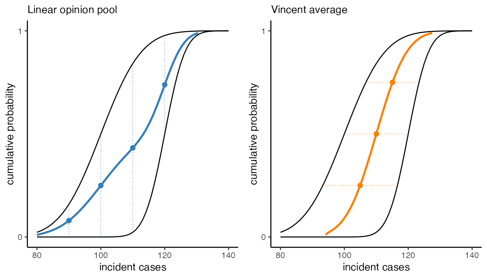
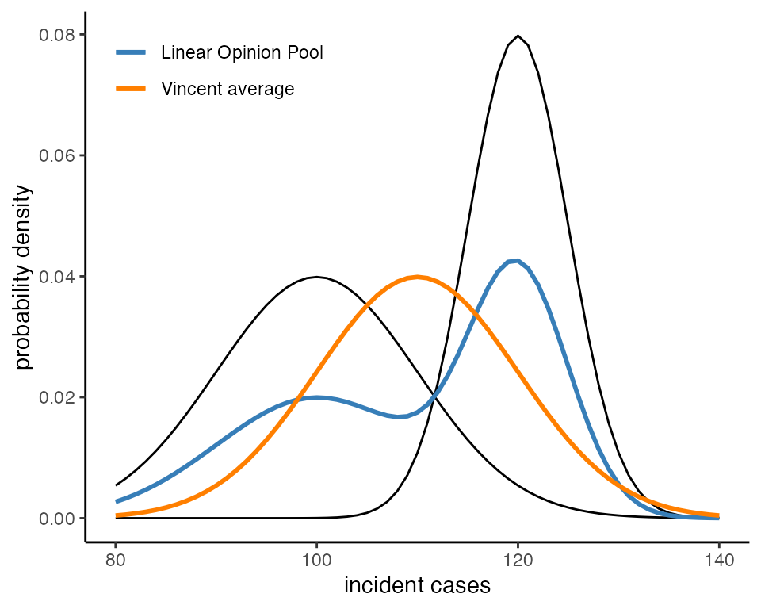
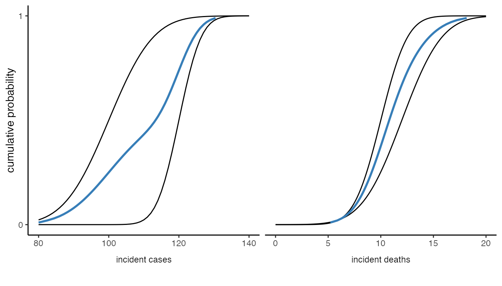
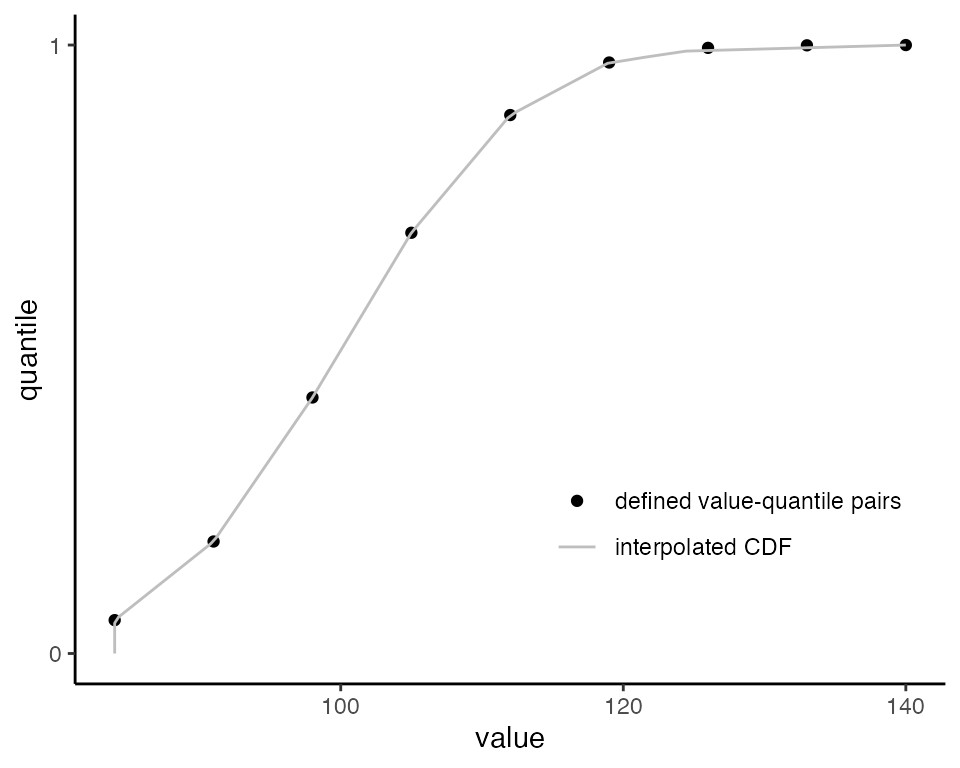

Introduction to CombineDistributions
intro-vignette.RmdThis package implements multiple methods for aggregating probabilistic predictions, including probability and quantile averaging, i.e., Linear Opinion Pool (LOP) (Stone 1961) and Vincent average (Vincent 1912; Ratcliff 1979) respectively. In addition, this package implements non-equal weighting schemes, including trimming methods (Jose, Grushka-Cockayne, and Lichtendahl 2014) - see weighted aggregates vignette. Additional information on these methods can be found in (Howerton et al., n.d.).
Unweighted aggregation
When aggregating probabilistic predictions, we can perform operations on the probabilities or the quantiles. Here, we focus on averages (i.e., probability averaging or Linear Opinion Pool, and quantile averaging or Vincent average).
If we consider a set of probabilistic predictions, each represented by a cumulative distribution function (CDF), \(F_i(x)\) where \(x\) is the possible future outcome and \(F_i(x)\) is the probability that the outcome is less than or equal to \(x\). Then, define the quantile function, \(F_i^{-1}(\theta)\) for some quantile \(\theta\).
To aggregate using the LOP method, we compute the arithmetic mean of cumulative probabilities at each \(x\) value, or
\[ F_{LOP}(x) = \sum_{i = 1}^{N}w_iF_i(x) \] for \(N\) models and weights \(w_i\).
Conversely, for the Vincent average, we calculate the arithmetic mean of values, \(x\), at each quantile \(\theta\), or
\[ F_{V}(\theta) = \sum_{i = 1}^{N}w_iF_i^{-1}(\theta) \]
also for \(N\) models and weights \(w_i\).
A simple example
Below, we show how to implement these two methods using
CombineDistributions for a simple example using normal
distributions. First, let’s load the packages we will need.
# for aggregation
library(CombineDistributions)
# for data manipulation
library(dplyr)
# for plotting
library(ggplot2)
library(cowplot)Specifically, for this example we will aggregate two normal
distributions, \(N(\mu = 100, \sigma =
10)\) and \(N(\mu = 120, \sigma =
5)\). Let’s define these two distributions at particular values,
x.
# set range of x values over which to define cdfs
x <- 80:140
# set CDFs
mean1 = 100
sig1 = 10
pred1 <- data.frame(value = x,
quantile = pnorm(x, mean1, sig1))
mean2 = 120
sig2 = 5
pred2 <- data.frame(value = x,
quantile = pnorm(x, mean2, sig2))We can aggregate these distributions using the
aggregate_cdfs() function. This function requires all
distributions be included in a single data.frame object
with columns quantile and value (to define
each CDF) and some column to distinguish between predictions.
So let’s put both predictions into a single data.frame
and add an id column.
Now, let’s aggregate using LOP. We do this by setting
method = "LOP" in the function call. We also have to define
the quantiles over which we would like the aggregate CDF to be
returned.
rq <- seq(0.01,0.99, 0.01)
LOP <- aggregate_cdfs(data = preds, # predictions
id_var = "id", # prediction identifier
method = "LOP", # aggregation method
ret_quantiles = rq # quantiles to return
)We can also aggregate using the Vincent average.
vin <- aggregate_cdfs(data = preds, # predictions
id_var = "id", # prediction identifier
method = "vincent", # aggregation method
ret_quantiles = rq # quantiles to return
)Now, let’s plot the individual (black) and aggregate predictions as cumulative distribution functions (CDFs).

Next we’ll plot the probability density functions (PDFs), \(f_i(x)\) to highlight the difference between the two approaches. Because our predictions are defined as CDFs, we will use a few tricks to obtain the PDFs.
The LOP operation defined above (operating on CDFs) is equivalent to operating on PDFs, so \(f_{LOP}(x) = \sum_{i = 1}^Nw_if_i(x)\).
The Vincent average of distributions from the same location-scale family (i.e., defined with location and scale paramter) will also be from that location-scale family, and the parameters of the aggregate are the average of those from the individual distributions (Thomas and Ross 1980). This property applies to our case, because we are aggregating normal distributions. So, the Vincent average aggregate will be a normal distribution with \(\mu_V = mean(\mu_1, \mu_2)\) and \(\sigma_v = mean(\sigma_1, \sigma_2)\).
Let’s implement these operations to plot the PDFs. First, we define the equivalent individual PDFs.
# set PDFs
mean1 = 100
sig1 = 10
pred1_pdf <- data.frame(value = x,
prob = dnorm(x, mean1, sig1))
mean2 = 120
sig2 = 5
pred2_pdf <- data.frame(value = x,
prob = dnorm(x, mean2, sig2))
# combine into single data.frame
preds_pdf <- bind_rows(pred1_pdf %>%
mutate(id = "A"),
pred2_pdf %>%
mutate(id = "B"))Now, let’s implement the above rule to find the PDF of the LOP and Vincent average aggregates.
LOP_pdf <- preds_pdf %>%
group_by(value) %>%
summarize(prob = mean(prob))
vin_pdf <- data.frame(value = x,
prob = dnorm(x, mean(c(mean1, mean2)), c(mean(sig1, sig2))))Plotting the results demonstrates the difference between the two methods: the LOP treats individual predictions as alternate possibilities, and retains the uncertainty captured between these individual predictions, whereas the Vincent average treats individual predictions as noisy samples and averages away the uncertainty captured between the predictions.

In cases where these rules do not apply, we can obtain aggregate PDFs by sampling from the aggregate CDF. See the SIRS vignette for an example.
Aggregating across multiple groups
Let’s say there are also death predictions for each model. To
illustrate, we add some simple death predictions to our existing
data.frame of case predictions.
# take the predictions from the first example and specify they are
# predictions of incident cases
preds <- preds %>%
mutate(target = "incident cases")
# define predictions of incident deaths for A and B and add to preds data.frame
preds <- preds %>%
bind_rows(
data.frame(value = rep(seq(0,20, 0.1), times = 2),
quantile = c(pnorm(seq(0,20, 0.1), 10, 2),
pnorm(seq(0,20, 0.1), 12, 3)),
id = sort(rep(LETTERS[1:2],length(seq(0,20, 0.1)))),
target = "incident deaths")
)To aggregate both sets of predictions at the same time, we use the
group_by argument, where we provide a vector of column
names that provide additional strata/groupings. Then, one aggregate
distribution will be returned for each unique combination of the
group_by elements.
# aggregate case and death targets separately
aggs <- aggregate_cdfs(data = preds, # predictions
id_var = "id", # prediction identifier
group_by = c("target"), # column names that specify groups
method = "LOP", # aggregation method
ret_quantiles = rq # quantiles to return
)
# aggs object has both incident cases and deaths
head(aggs %>% arrange(quantile))
#> target quantile value
#> 1: incident cases 0.01 80.000000
#> 2: incident deaths 0.01 5.204324
#> 3: incident cases 0.02 82.471293
#> 4: incident deaths 0.02 5.869789
#> 5: incident cases 0.03 84.433107
#> 6: incident deaths 0.03 6.284290We can plot these two aggregates to see the full distribution.

Implementation details
-
CDF checks: The
CombineDistributionspackage implements two checks on all distributions to be aggregated.monotonic CDFs: for a set of increasing quantiles, \(q_i\), check that the values are also increasing monotonically, i.e., \(F(q_i) \leq F(q_{i+1})\).
NA values: check that no quantile or value is NA.
If a CDF fails either check, it will be excluded from aggregation and a warning message will be displayed.
-
Defining a CDF: This package assumes that CDFs for each individual prediction are defined as a set of value-quantile pairs. Therefore, a method is needed to interpolate quantiles or values between defined pairs and, in some cases, extrapolate beyond the set of value-quantile pairs.
For this package, we use linear interpolation (
approx()). The limitations of this choice are more significant when the CDF is defined over fewer value-quantile pairs.We assume the CDF jumps to 0 and 1 outside the smallest and largest value-quantile pairs. Because we do not attempt to estimate tail probabilities, it is recommended that tail probabilities of the individual distribution are sufficiently well defined (espeically when those probabilities are of interest in the aggregate).
Below is an example of a set of value-quantile pairs and the corresponding piecewise-linear approximation with jumps that would be aggregated by
CombineDistributions.
